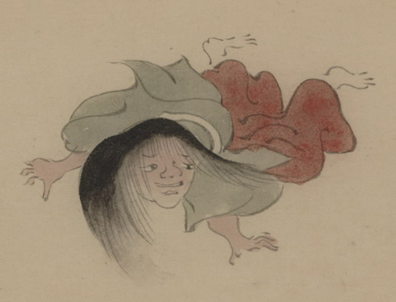

長い髪の化物。髪型から、女もしくは童子と思われる。目鼻口が大きい。緑色の衣、赤い袴を着ており、うつぶせに倒れて、向かって右側を見ている。
出典：親書誌：U426_nichibunken_0150：付喪神絵詞；ツクモガミエコトバ／日付：2010／資源識別子：U426_nichibunken_0150_0103_0000
Copyright (c)2010- International Research Center for Japanese Studies, Kyoto, Japan. All rights reserved.